Tommy John Surgery and its Relationship to MLB Pitcher Career Trajectory
Erin Franke
# Load libraries and data - these are the packages I used, thank you RStudio!
library(tidyverse)
library(lubridate)
library(readxl)
library(bayesrules)
library(tidyverse)
library(rstanarm)
library(broom.mixed)
library(tidybayes)
library(forcats)
library(bayesplot)
library(ggtext)
library(janitor)
library(gt)
library(tidymodels)
library(probably)
library(vip)
library(ggmosaic)
tidymodels_prefer()
`%!in%` <- Negate(`%in%`)
seasonal_complete <- read_csv("data/seasonal_complete.csv")Introduction
A pitcher’s success can vary dramatically over the course of their major league career. 2015 Cy Young Jake Arrieta had tremendous success in the middle of his career, but began his career with the Orioles where he pitched at levels far below league average. In more recent seasons he has also struggled. To measure a pitcher’s success overtime, we might look at ERA+, which takes a player’s earned run average each season and normalizes it across the entire league. An ERA+ of 100 represents league average, whereas 150 and 80 would respectively represent 50% better and 20% worse than league average. Despite many still considering Arrieta legendary, the quality of his pitching has been slowly declining since his Cy Young season it is clear his value to a team is not the same as it once was. Arrieta’s career trajectory can be seen on the graph on the left below, but this path is just one example of the type of trajectory a player’s career may take. Current Atlanta Brave Drew Smyly has had a lot of variability in his success as a pitcher, as seen on the graph on the right. While his first four seasons appeared quite strong, Smyly performed below average in 2016 and 2019. The past two seasons he has had a little more success.
seasonal_complete %>%
filter(Player == "Jake Arrieta") %>%
ggplot(aes(x=Year, y=`ERA+`))+
geom_point()+
theme_classic()+
labs(x="", title = "Jake Arrieta's ERA+ over his career")+
theme(plot.title.position = "plot",
plot.title = element_text(family = "mono", size = 12))+
geom_smooth(method="loess", se=FALSE, color = "azure3")
seasonal_complete %>%
filter(Player == "Drew Smyly") %>%
ggplot(aes(x=Year, y=`ERA+`))+
geom_point()+
theme_classic()+
labs(x="", title = "Drew Smyly's ERA+ over his career")+
theme(plot.title.position = "plot",
plot.title = element_text(family = "mono", size = 12))+
ylim(c(50, 220))+
geom_smooth(method = "loess", se=FALSE, color = "azure3")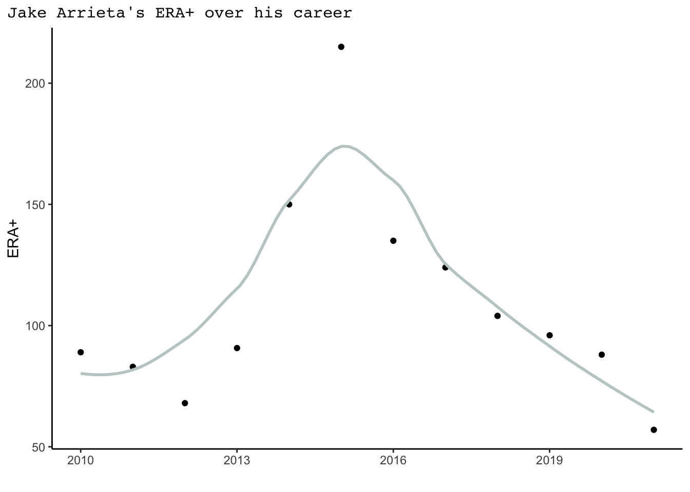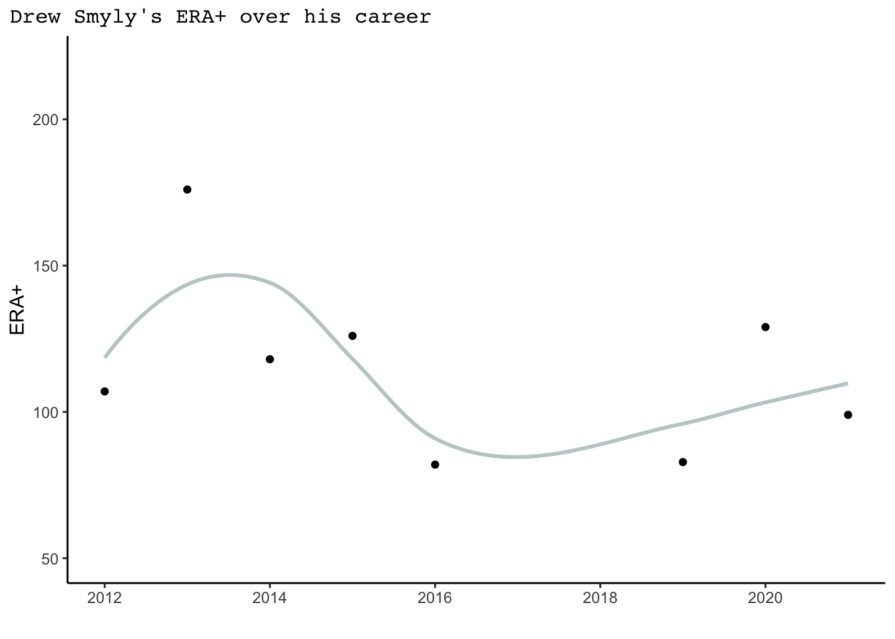
What might contribute to these pitching trends? While trends are incredibly complex and the result of many different factors, a major factor to pitching success is health. Notice Smyly’s missing stats in 2017 and 2018 - during this period, he underwent Tommy John surgery. Tommy John surgery is a major surgery that repairs a torn ulnar collateral ligament in the elbow by replacing it with a tendon from another part of a player’s body. Recovery typically takes a year, but can take up to 2.
There have been multiple studies completed to attempt to understand the complex relationship between Tommy John surgery and pitcher performance. An article published in 2014 by Inside Science is a nice source to understanding some of the most prominent studies. This article highlights a study by researchers from Rush Medical Center in Chicago that finds pitchers win more games after surgery, as well as a study by researchers at Detroit’s Henry Ford Hospital that finds pitchers have an increased WHIP and ERA following their surgery. These results are obviously conflicting, though the first study only used one season of data prior to the surgery. In that case, it is not necessarily surprising pitcher performance improved after the surgery as in that season the pitcher was likely injured or needing treatment. All together, there is lots of great literature out there to read to better understand Tommy John surgery and its implications, and my study will look to build on these analyses.
This analysis will seek to understand how the trajectory of a pitcher’s MLB success changes over the course of his career, with a focus especially on players who undergo Tommy John surgery at some point after their MLB debut. We will answer two questions in this study. First, how well can we predict whether or not a player will return from Tommy John surgery to play again at the major league level? Second, what correlates with an MLB starting pitcher’s seasonal success, and how does this seasonal success change over a player’s career? The goal of this analysis will be to help scouts make smarter decisions when drafting players and gain greater insight to if there are risks of drafting players that have undergone Tommy John surgery or may need Tommy John surgery in the future.
Data
This analysis uses data from all players drafted since 1987, the first year that the Secondary January Amateur draft did not exist. Data for this analysis were collected from multiple sources. Information on each player’s draft round and year were collected from a GitHub source and checked for accuracy. Unfortunately, I can no longer find the webpage where I originally downloaded this data from. I then joined these data by player name and birth date with career level pitcher statistics and debut information from Baseball Reference, which had to be downloaded individually for each season. Tommy John surgery information was obtained from MLB Reports, and finally individual player data on the seasonal level were downloaded from Stathead Baseball. The diversity of the downloaded data allowed me to create a database with a wide variety of variables, and enables the comparison between players as well as the analysis of a player’s development over the course of their career.
The main variables I will use in this analysis are displayed in the codebook below. My process to create this data set is fully documented in the Data Cleaning section of this website.
codebook = data.frame(Variable = c("Player", "Year", "Age", "hs_draftee", "birth_date", "Debut", "seasonTime", "surgery1Year", "statsTime", "surgery1time", "surgery_age", "ERA+", "G", "GS", "IP", "WHIP", "kRate", "SLG"),
Meaning = c("name of pitcher", "year of MLB season", "player age during season", "whether the player was drafted in high school", "player date of birth", "player MLB debut data", "the season's stats occured without surgery, short after surgery, or long after surgery", "the year the player had their first Tommy John surgery while in the MLB", "whether the stats for this season come before or after the player's first surgery", "whether the player's first surgery came before draft, between draft & debut, or after debut", "age of pitcher at first surgery", "adjusts a pitcher's ERA according to the pitcher's ballpark and the ERA of the pitcher's league", "games played", "games started", "innings pitched", "number of walks + hits per inning pitched", "average number of strikeouts per inning", "total number of bases a pitcher gives up per at bat"))
codebook %>%
gt() %>%
tab_header(
title = md("**Codebook**")
) %>%
tab_style(
style = cell_fill(color = "honeydew"),
locations = cells_body(
rows = Variable %in% c("Player", "Age", "birth_date", "seasonTime", "statsTime", "surgery_age", "G", "IP", "kRate"))) %>%
tab_style(
style = cell_fill(color = "lightcyan3"),
locations = cells_body(
rows = Variable %!in% c("Player", "Age", "birth_date", "seasonTime", "statsTime", "surgery_age", "G", "IP", "kRate"))) %>%
tab_options(
table.font.size = px(13L)
)| Codebook | |
|---|---|
| Variable | Meaning |
| Player | name of pitcher |
| Year | year of MLB season |
| Age | player age during season |
| hs_draftee | whether the player was drafted in high school |
| birth_date | player date of birth |
| Debut | player MLB debut data |
| seasonTime | the season's stats occured without surgery, short after surgery, or long after surgery |
| surgery1Year | the year the player had their first Tommy John surgery while in the MLB |
| statsTime | whether the stats for this season come before or after the player's first surgery |
| surgery1time | whether the player's first surgery came before draft, between draft & debut, or after debut |
| surgery_age | age of pitcher at first surgery |
| ERA+ | adjusts a pitcher's ERA according to the pitcher's ballpark and the ERA of the pitcher's league |
| G | games played |
| GS | games started |
| IP | innings pitched |
| WHIP | number of walks + hits per inning pitched |
| kRate | average number of strikeouts per inning |
| SLG | total number of bases a pitcher gives up per at bat |
Understanding career trajectory
Age distribution
In understanding career trajectory and longevity, we should first understand the age distribution of players in the MLB. Using all pitchers that played in the 2021 season, we get the following age distribution and see most pitchers are aged between their low twenties and low thirties.
seasonal_complete %>%
filter(Year == 2021) %>%
ggplot(aes(x=Age))+
geom_density(fill = "lightcyan3")+
theme_classic()+
labs(title = "Age distribution of pitchers in the MLB", x="Age", y="")+
theme(plot.title.position = "plot",
plot.title = element_text(family = "mono", size = 11),
axis.title.x = element_text(family = "mono", size = 11))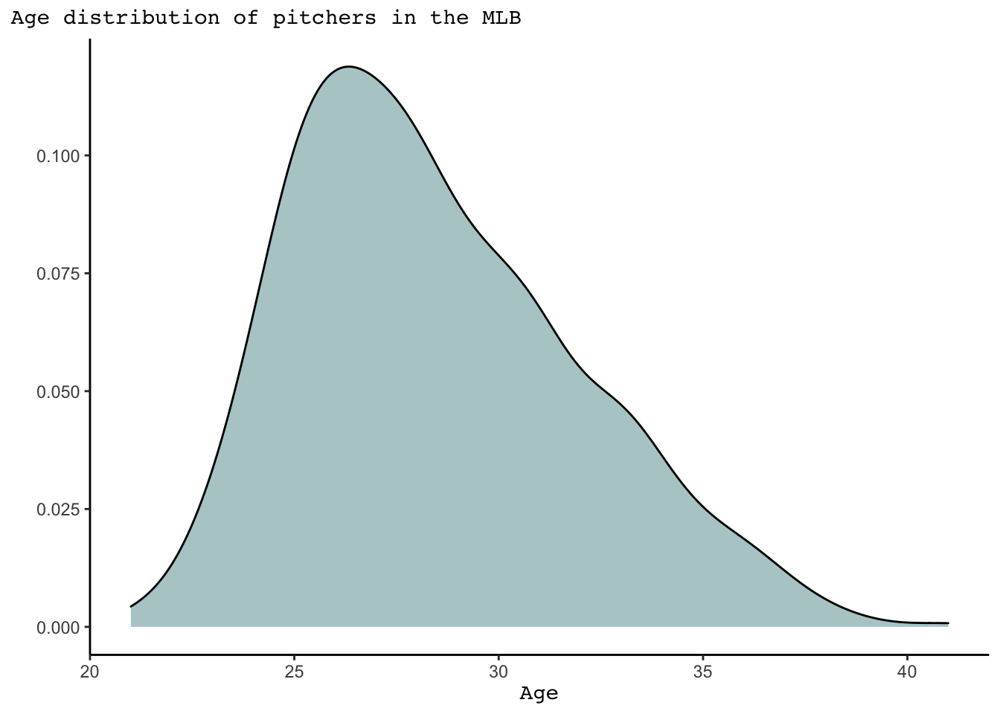
Career length
In trying to understand the impact of having Tommy John surgery on a player’s career, we should seek to understand if there are differences in career length for players that receive the surgery. To do this, we compare the career length in seasons of players that did not have surgery at any point in their career to those that had surgery between their draft and debut date. We remove players that had surgery in the MLB for this graph - the fact that they made it far enough in their MLB career to have a surgery during it is an indicator of career length. Additionally, we do not include players that had surgery before being drafted as scouts deemed them worthy enough to be drafted despite their surgery. When looking at the graph, there do not seem to be any significant differences.
seasonal_complete %>%
filter(surgery1time %!in% c("after debut", "before draft")) %>%
mutate(surgery1time = case_when(surgery1time == "between draft and debut" ~ "between draft and debut",
TRUE ~ "no surgery")) %>%
group_by(Player, surgery1time) %>%
summarize(n = n(), lastyear = max(Year)) %>%
filter(lastyear < 2020) %>%
ggplot(aes(x=n, fill=surgery1time))+
geom_density(alpha = 0.5)+
theme_classic()+
scale_fill_manual(values = c("deepskyblue4", "sienna2"))+
labs(x="career length (seasons)", y="", title = "MLB career length (seasons) averages similar length for players that<strong><span style='color:sienna2'> didn't have Tommy John</span></strong></b>", subtitle = "<strong><span style='color:sienna2'> surgery before debuting </span></strong></b>in comparison to <strong><span style='color:deepskyblue4'>those that had surgery between draft and debut</span></strong></b>")+
theme(plot.title = element_markdown(size = 9, family = "mono"),
plot.subtitle = element_markdown(size = 9, family = "mono"),
plot.title.position = "plot",
legend.position = "none",
axis.title.x = element_text(family = "mono", size = 9))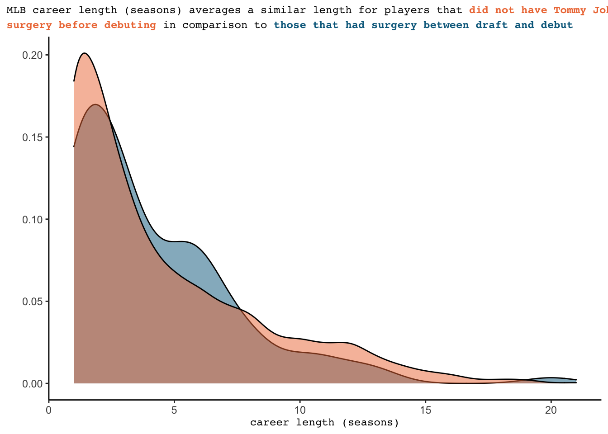
Performance
For players having their first Tommy John surgery following their MLB debut, it could be interesting to understand how their performance compares before versus after their surgery. In the following graph, we can notice that players average more innings following their surgery if it is done while they are younger. On the other hand, as players age into their thirties they almost always average fewer innings after the surgery. Players that did not play following their surgery are shown in red, but this trend holds even just looking at the blue dots, which represent players that play again after their surgery.
diffIP <- seasonal_complete %>%
filter(surgery1time == "after debut") %>%
group_by(Player, statsTime) %>%
summarize(avg_IP = round(mean(IP),2),
surgery_age = time_length(difftime(`Surgery 1`, birth_date), "years")) %>%
select(Player, surgery_age, statsTime, avg_IP) %>%
distinct() %>%
pivot_wider(id_cols = Player:surgery_age, names_from = statsTime, values_from = avg_IP)
diffIP$after <- replace_na(diffIP$after, 0)
diffIP %>%
mutate(difference = after - before,
leaveMLB = case_when(after == 0 ~ "leave MLB",
TRUE ~ "continue playing")) %>%
ggplot(aes(x=surgery_age, y= difference, color = leaveMLB))+
geom_point()+
theme_classic()+
geom_hline(yintercept = 0, linetype = "dashed", color = "red") %>%
labs(title = "Pitchers tend to average fewer seasonal innings post Tommy John surgery than prior to it", subtitle = "Players that leave the MLB completely are shown in<strong><span style='color:red'> red</span></strong></b>", x = "surgery age", y = "Average seasonal IP after - before surgery")+
theme(plot.title = element_markdown(size = 9, family = "mono"),
plot.subtitle = element_markdown(size = 9, family = "mono"),
plot.title.position = "plot",
axis.title.x = element_markdown(size = 8, family = "mono"),
axis.title.y = element_markdown(size = 8, family = "mono"),
legend.position = "none")+
geom_hline(yintercept = 0, linetype = "dashed", color = "black") +
scale_color_manual(values = c("navy", "red"))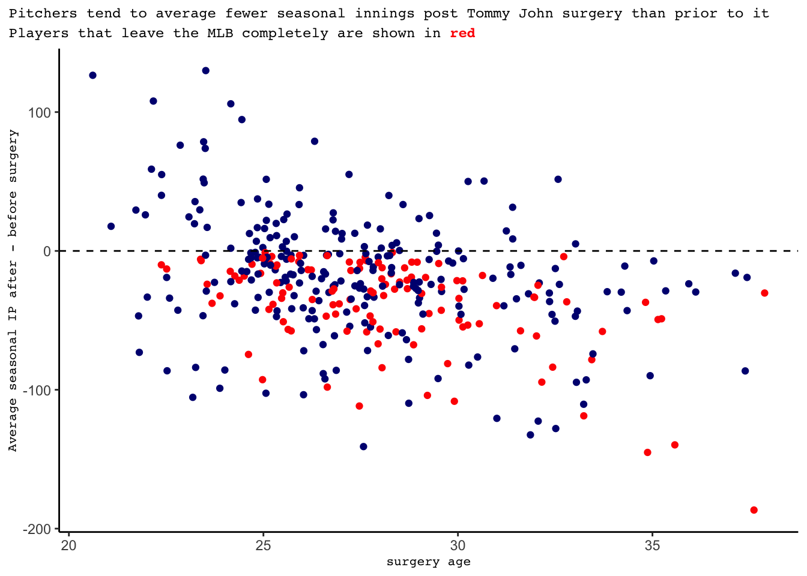
Playing after Tommy John surgery
Tommy John surgery is a major procedure to go through, and thus it is not certain that a pitcher will return to the MLB following this surgery. For the 318 pitchers in this study that received Tommy John surgery following their MLB debut, 233 (73.27%) of them returned to the MLB to play again. These 318 pitchers all had the surgery prior to 2020, as many of those that received the surgery in 2020 and certainly in 2021 will not yet have recovered and returned major league baseball.
#filter for players that had surgery after their debut but in years prior to 2020. Group by player and summarize their number of seasons after and before surgery, as well as create an indicator variable for if they play after surgery.
play_post_surgery <- seasonal_complete %>%
filter(surgery1time == "after debut", surgery1Year < 2020) %>%
group_by(Player) %>%
count(statsTime) %>%
pivot_wider(id_cols = Player, names_from = statsTime, values_from = n) %>%
mutate(played_after = case_when(is.na(after) == TRUE ~ 0,
TRUE ~ 1))
# 73.27% of players play following their surgery
play_post_surgery %>%
tabyl(played_after)
#join with seasonal complete to get more information about these players. Currently, the data is no longer grouped by player.
seasonal_SurgPostdebut <- seasonal_complete %>%
filter(surgery1time == "after debut", surgery1Year < 2020) %>%
left_join(play_post_surgery, by = "Player")
#filter for seasonal stats before surgery. Eliminate any WHIPS of Inf. Group by player and find their age at surgery.
stats <- seasonal_SurgPostdebut %>%
filter(statsTime == "before", WHIP < 100) %>%
group_by(Player) %>%
mutate(surgery_age = time_length(difftime(`Surgery 1`, birth_date), "years"),
games_started = sum(GS),
games = sum(G),
starter = case_when(games_started/games < 0.5 ~ 0,
TRUE ~ 1),
starter = as.factor(starter),
totalIP = sum(IP),
kRate = case_when(totalIP >=1 ~ sum(SO)/totalIP,
TRUE ~ sum(SO)), #prevents krate of 5 for player that had one strikeout and pitched 0.2 innings
totwalks = sum(BB),
totH = sum(H),
avgWHIP = (totwalks+totH)/totalIP,
played_after = as.factor(played_after)) %>%
select(hs_draftee, played_after, surgery_age, starter, kRate, totalIP, avgWHIP) %>%
distinct()Exploratory Data Analysis
If a team has a player decide to undergo Tommy John surgery, or is debating signing a player needing surgery, it would be helpful to understand what might be correlated with a player returning to the majors following their surgery.
A few possible performance based variables to look into could be the pitcher’s average strikeout rate and average WHIP, as well as total innings pitched prior to the surgery. We see that pitchers that return to the MLB tend to have slightly lower (better) WHIPs and slightly higher (better) strikeout rates. Additionally, the innings pitched variable appears highly informative. 75.29% of the pitchers that did not return to the MLB pitched fewer than 200 innings prior to their surgery. In comparison, only 51.5% of the pitchers that played after pitched less than 200 innings.
#understand relationship between 200 innings pitched prior to surgery and return to MLB rate
stats %>%
mutate(manyIP = case_when(totalIP >= 200 ~ "high",
TRUE ~ "low")) %>%
group_by(manyIP, played_after) %>%
count()#create graph for relationship between average WHIP and playing after surgery
stats %>%
filter(avgWHIP < 2.5, avgWHIP > 0.5) %>%
ggplot(aes(x=avgWHIP, fill = played_after))+
geom_density(alpha=0.5) +
theme_classic()+
labs(x= "average WHIP", y = "", title = "Average WHIP prior to Tommy John surgery comparing pitchers", subtitle = "that <strong><span style='color:navy'>play again</span></strong></b> versus <strong><span style='color:red'>don't</span></strong></b>")+
scale_fill_manual(values = c("navy", "red"))+
theme(axis.text.y = element_blank(),
axis.ticks.y = element_blank(),
plot.title.position = "plot",
plot.title = element_markdown(family = "mono", size =14),
plot.subtitle = element_markdown(family = "mono", size =14),
legend.position = "none",
axis.title.x = element_markdown(family="mono", size=11))
#create graph for relationship between average strikeout rate and playing after surgery
stats %>%
ggplot(aes(x=kRate, fill = played_after))+
geom_density(alpha=0.5) +
theme_classic()+
labs(x= "strikeout rate per inning", y = "", title = "Average K rate prior to Tommy John surgery comparing pitchers", subtitle = "that <strong><span style='color:navy'>play again</span></strong></b> versus <strong><span style='color:red'>don't</span></strong></b>")+
scale_fill_manual(values = c("navy", "red"))+
theme(axis.text.y = element_blank(),
axis.ticks.y = element_blank(),
plot.title.position = "plot",
plot.title = element_markdown(family = "mono", size =14),
plot.subtitle = element_markdown(family = "mono", size =14),
legend.position = "none",
axis.title.x = element_markdown(family="mono", size=11))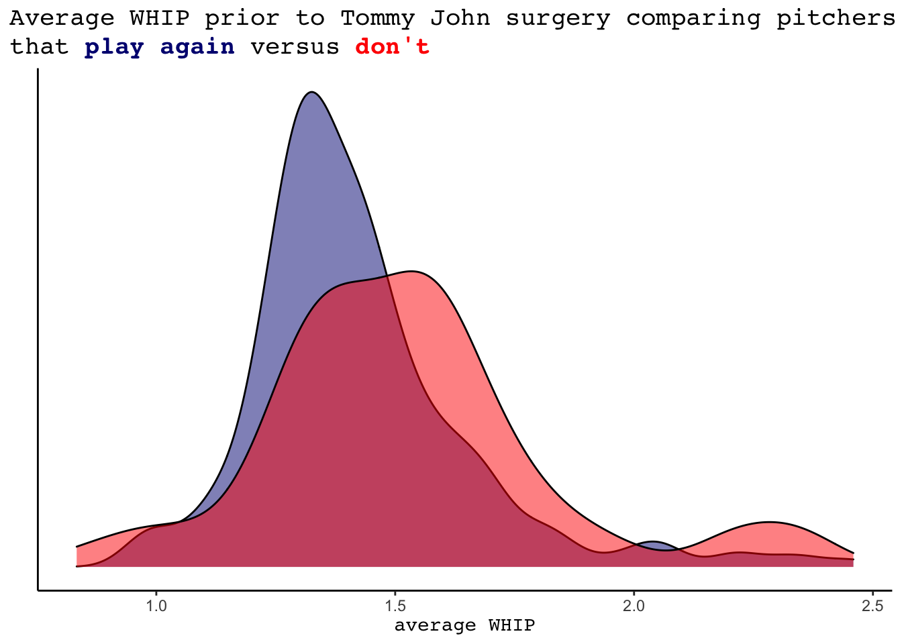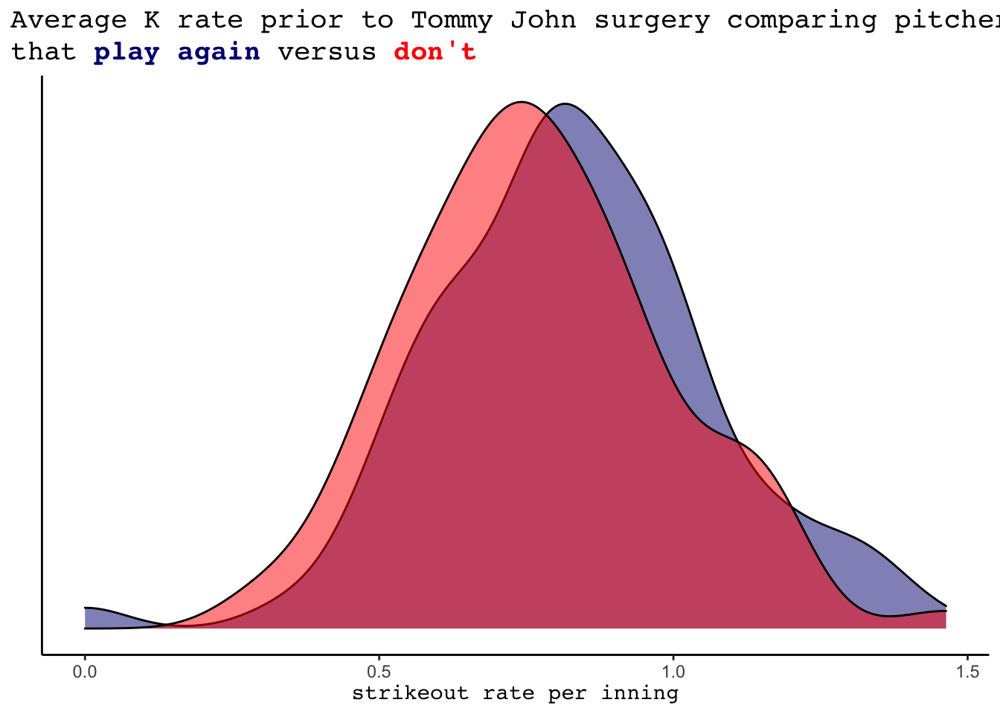
#create graph for relationship between total innings pitched and playing after surgery
stats %>%
ggplot(aes(x=totalIP, fill = played_after))+
geom_density(alpha=0.5) +
theme_classic()+
labs(x= "total IP", y = "", title = "Total IP prior to Tommy John surgery comparing players that <strong><span style='color:navy'>play again</span></strong></b> versus <strong><span style='color:red'>don't</span></strong></b>")+
scale_fill_manual(values = c("navy", "red"))+
theme(axis.text.y = element_blank(),
axis.ticks.y = element_blank(),
plot.title.position = "plot",
plot.title = element_markdown(family = "mono", size =10),
legend.position = "none",
axis.title.x = element_markdown(family="mono", size=9))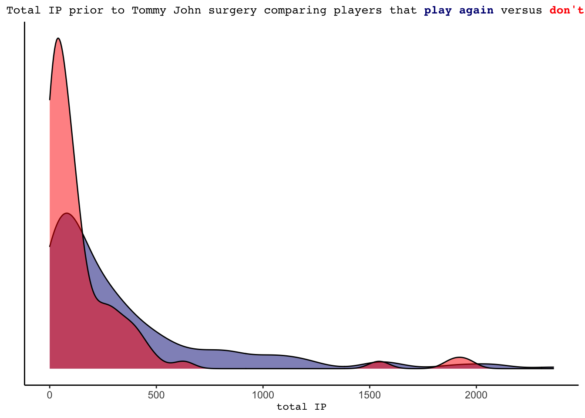
In addition to performance metrics, we can see if there is any relationship between a pitcher playing after their surgery and their role (starter or reliever) as well as whether they were a high school draftee.
# create mosiac plot showing relationship between starter versus reliever and results of playing again
stats %>%
mutate(starter = recode(starter, "0" = "reliever", "1" = "starter")) %>%
ggplot()+
geom_mosaic(aes(x = product(played_after,starter), fill = played_after), alpha = 0.7) +
labs(x= "", y = "", title = "Starters <strong><span style='color:navy'>play after surgery</span></strong></b> more often than relievers")+
scale_fill_manual(values = c("navy", "red")) +
theme_classic()+
theme(axis.text.y = element_blank(),
axis.ticks.y = element_blank(),
plot.title = element_markdown(family = "mono", size =13),
legend.position = "none",
axis.text.x = element_markdown(family = "mono", size = 11))
# create mosiac plot showing relationship between high school draftee indicator and results of playing again
stats %>%
mutate(hs_draftee = case_when(hs_draftee == TRUE ~ "high school",
hs_draftee == FALSE ~ "college/international")) %>%
ggplot()+
geom_mosaic(aes(x = product(played_after,hs_draftee), fill = played_after), alpha = 0.7) +
labs(x= "", y = "", title = "High school draftees <strong><span style='color:navy'>play after surgery</span></strong></b> slightly more often", subtitle = "than college or international picks")+
scale_fill_manual(values = c("navy", "red")) +
theme_classic()+
theme(axis.text.y = element_blank(),
axis.ticks.y = element_blank(),
plot.title = element_markdown(family = "mono", size =13),
plot.subtitle = element_markdown(family = "mono", size =13),
legend.position = "none",
axis.text.x = element_markdown(family = "mono", size = 11))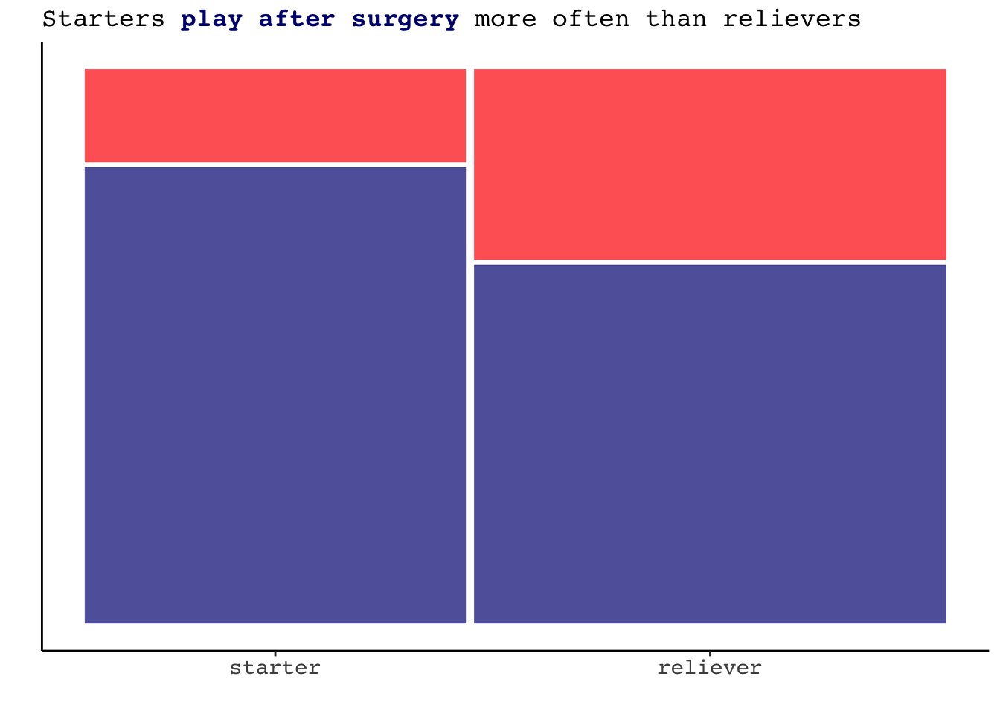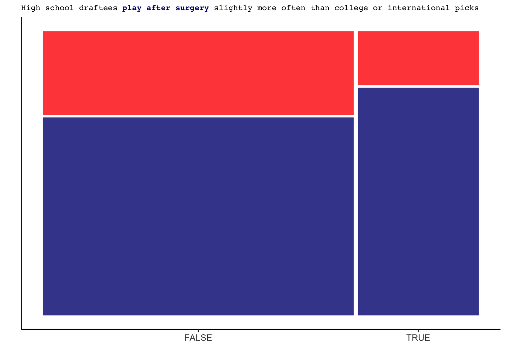
A final variable to investigate is the age at which the player is having the Tommy John surgery. Below, we see that pitchers that pitch again tend to be slightly younger in age at the time of their surgery in comparison to those that do not play again. However, this difference is not quite as substantial as one might have originally thought.
stats %>%
ggplot(aes(x=surgery_age, fill = played_after))+
geom_density(alpha=0.5) +
theme_classic()+
labs(x= "surgery age", y = "", title = "Surgery age comparing players that <strong><span style='color:navy'>play again</span></strong></b> versus <strong><span style='color:red'>don't</span></strong></b>")+
scale_fill_manual(values = c("navy", "red"))+
theme(axis.text.y = element_blank(),
axis.ticks.y = element_blank(),
plot.title.position = "plot",
plot.title = element_markdown(family = "mono", size =12),
legend.position = "none",
axis.title.x = element_markdown(family="mono", size = 11))
Model Introduction and Priors
Having a basic understanding of some of these variables, we can now build a logistic regression model. In building this model, we will let \(Y\) be a binary indicator of if the pitcher plays again at the MLB level following his Tommy John surgery, which occurs at probability \(\pi\). Understanding the results of the exploratory data analysis, this model will utilize the following predictors:
- \(X_1\): indicator variable for if a player is a starter (1) or reliever (0)
- \(X_2\): continuous variable representing the total number of innings pitched by a player prior to their surgery
- \(X_3\): continuous variable representing the player’s average WHIP prior to their surgery
- \(X_4\): indicator variable of if a player was a high school draftee
- \(X_5\): continuous variable representing a pitcher’s strikeout rate prior to their surgery
- \(X_6\): continuous variable for the age at which a player got surgery
Starting with the centered intercept \(\beta_{0c}\), we recall our prior understanding that for the average player there is roughly a 73% chance of a player returning to the MLB, i.e. \(\pi \approx 0.73\). As a result, we can set the prior mean for \(\beta_{0c}\) on the log(odds) scales to 1:
Setting a range for this normal prior, we have a vague understanding of the log(odds of returning) ranges from roughly 0.3 to 1.7 \((1 \pm 2*0.35)\). In other words, the odds of a typical pitcher playing after at the MLB level following surgery could be somewhere between:
\[\begin{split} (e^{0.3}, e^{1.7}) \approx (1.35, 5.474) \end{split}\] Thus the probability of the average pitcher returning to pitch at the MLB level could be somewhere between about 0.57 and 0.85:\[\begin{split} \left(\frac{1.35}{1 + 1.35}, \frac{5.474}{1 + 5.474}\right) \approx (0.5747, 0.8455). \end{split}\]
We have only a very basic understanding of each predictor’s relationship with a player’s likelihood of returning to pitch at the MLB level and thus will utilize weakly informative priors for these coefficients. As a result, their coefficients are centered at 0 and they have a fairly wide standard deviation. As a whole, the model can be summarized as:
stats_clean <- stats %>%
mutate(played_after = relevel(played_after, ref='0'),
starter = relevel(starter, ref='0')) %>%
filter(avgWHIP < 3.5)
played_after_mod <- stan_glm(played_after ~ starter + totalIP + avgWHIP + hs_draftee + kRate + surgery_age,
data = stats_clean, family = binomial,
prior_intercept = normal(1, 0.35),
prior = normal(0, 2.5, autoscale = TRUE),
chains = 4, iter = 5000*2, seed = 84735, refresh=0)
prior_summary(played_after_mod)$prior_intercept
prior_summary(played_after_mod)$priorThis model uses 315 out of the 318 pitchers that had Tommy John surgery following their major league debut. Three pitchers - Joe Mantiply, Jack Egbert, and Erik Bedard - were removed as their WHIPs were large outliers (all over 4) due to each pitching fewer than three MLB innings before their Tommy John surgery. With these three included in the model, the 80% credible interval on WHIP was almost entirely positive, indicating that as pitchers perform worse their likelihood of returning to the MLB after surgery rises. While Mantiply, Egbert, and Bedard interestingly enough all did return to pitch at the MLB level following their Tommy John surgery, the overall trend that we saw in the density plots indicates that better performing pitchers return more after surgery and thus our model should capture that.
# check out the players that had outlier WHIPs
stats %>%
filter(avgWHIP > 3.5)Check the diagnostics
Before getting into the results of the model, we should check the diagnostics of the simulation. The model above was run using Markov Chain Monte Carlo simulation techniques. This process enables us to estimate the posterior of our classification model and get a better understanding of what might contribute to a pitcher returning to the MLB following their surgery. However, not all simulations are perfect. We are looking for Markov chains that roam the sample space of \(\pi\) and in the end imitate a random sample that converges to the posterior. To assess if our simulation does this, we can look at trace plots, compare parallel chains, and assess autocorrelation.
The set of plots below on the left shows the trace plots for our simulation. These plots have no discernible trends or patterns, which is what we want - this implies that our Markov chains are stable. The set of plots below on the right compare parallel chains. In these plots we are looking for consistency across the four chains, which we definitely have. This provides evidence that our simulation is stable and long enough. Additionally, the autocorrelation plots show our Markov chain sufficiently mimics the behavior of an independent sample (which is what we want).
mcmc_trace(played_after_mod)
mcmc_dens_overlay(played_after_mod)+
ylab("density")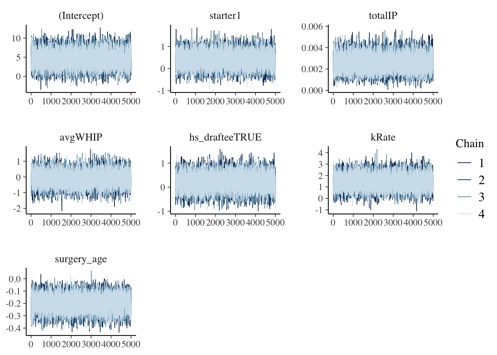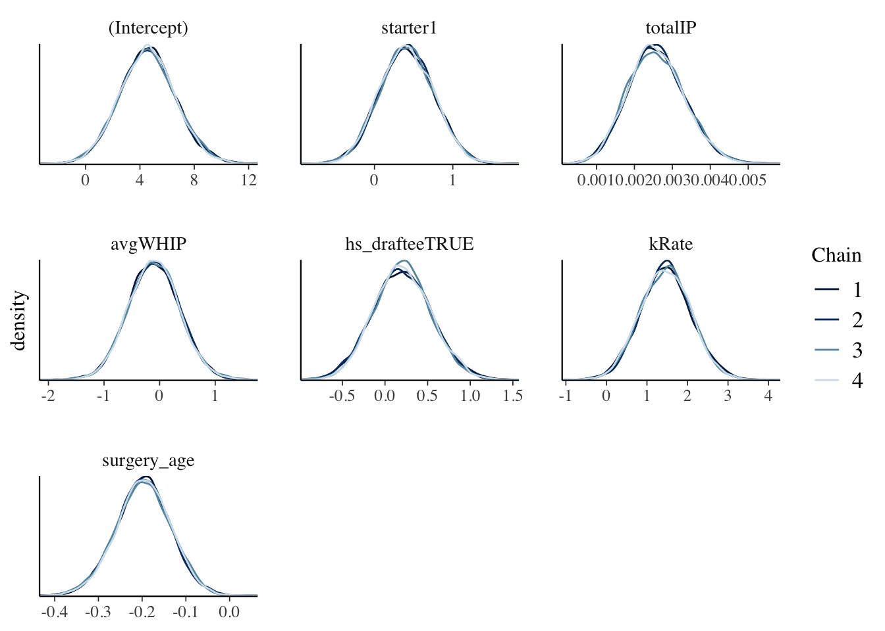
mcmc_acf(played_after_mod)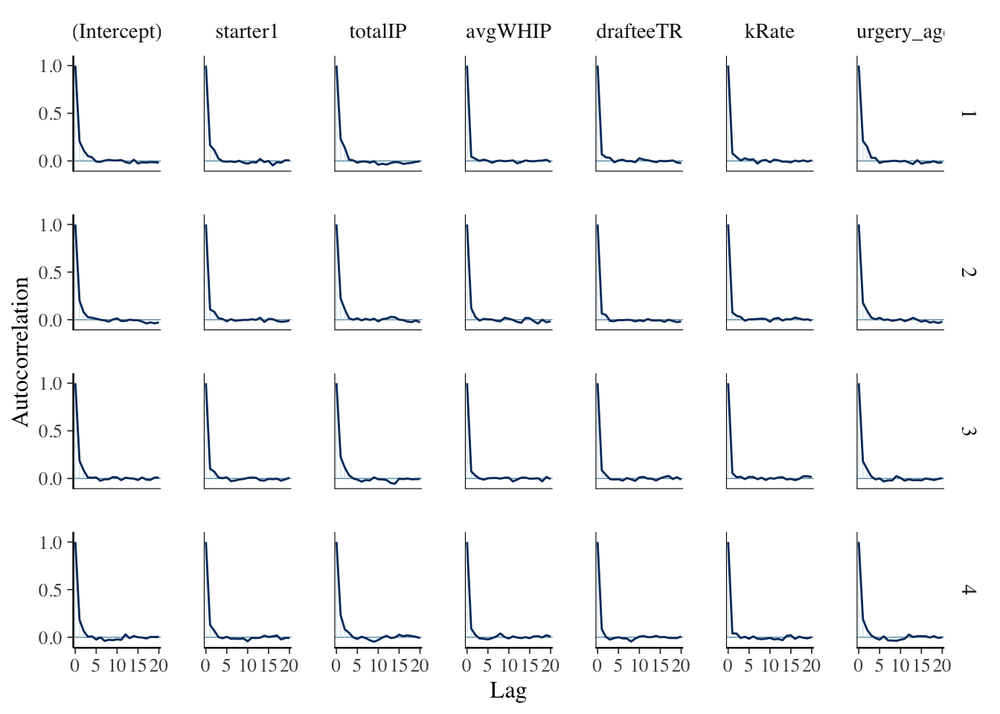
Model results
Now that our simulation has proven itself reliable, we can check out the coefficients of our model. Using an 80% confidence interval, we see that a pitcher’s total innings pitched, strikeout rate, and surgery age are significant variables in predicting whether they will pitch again at the MLB level (when controlling for the other predictors in the model). On the other hand, the high school draftee indicator variable and average WHIP are not significant variables. Whether or not a player is a starter or reliever is borderline significant as the lowest end of the confidence interval is just slightly negative, indicating it is reasonable to assume that starters are more likely to return to play the MLB level holding all other variables constant.
tidy(played_after_mod, effects = "fixed", conf.int = TRUE, conf.level = 0.80) %>%
mutate(estimate = round(estimate, 6),
std.error = round(std.error, 4),
conf.low = round(conf.low, 6),
conf.high = round(conf.high, 6)) %>%
gt() %>%
tab_header(
title = md("**Model results**")
) | Model results | ||||
|---|---|---|---|---|
| term | estimate | std.error | conf.low | conf.high |
| (Intercept) | 4.560101 | 2.0413 | 1.948821 | 7.218393 |
| starter1 | 0.409641 | 0.3503 | -0.032597 | 0.858654 |
| totalIP | 0.002558 | 0.0008 | 0.001635 | 0.003577 |
| avgWHIP | -0.101489 | 0.4590 | -0.686720 | 0.486679 |
| hs_drafteeTRUE | 0.197468 | 0.3400 | -0.235632 | 0.639926 |
| kRate | 1.467364 | 0.6269 | 0.665150 | 2.260704 |
| surgery_age | -0.197175 | 0.0616 | -0.278644 | -0.118299 |
Looking at the significant coefficients, we understand that:
- For every additional 100 total innings a player has pitched prior to his surgery, there is an 80% posterior chance that the odds of him returning to the pitch at the MLB level following the surgery increase by somewhere between 17.8% and 43% holding all other variables constant: \((e^{0.001635*100}, e^{0.003577*100}) = (1.178, 1.43)\).
- For every additional strikeout per nine inning pitched a player has prior to his surgery, there’s an 80% posterior chance the odds of him returning to pitch at the MLB level following the surgery increase by somewhere between 7.7% and 28.6% holding all other variables constant: \((e^{0.665150*\frac{1}{9}}, e^{2.260704*\frac{1}{9}}) = (1.077, 1.286)\).
- For every year older that a player gets when he has surgery, we estimate there is an 80% posterior chance that the odds of him returning to pitch at the MLB level are decreased by a factor of 75.68% to 88.84% holding all other variables constant: \((e^{-0.278644}, e^{-0.118299}) = (0.7568, 0.8884)\).
Using the model
With a model, we can now use it in context. For example, suppose we wanted to predict whether or not Tyler Glasnow will return to play again at the MLB level following his Tommy John surgery that occurred on August 4, 2021. Glasnow is currently a starter for the Tampa Bay Rays. Up until his surgery, he has averaged a WHIP of 1.248, 1.255 strikeouts per inning, and has pitched 403 innings. He was drafted out of high school and had surgery at age 27.948. To predict whether Glasnow will return to the MLB, we can approximate the posterior predictive model for the binary outcomes of \(Y\), whether the pitcher plays again, where
\[\begin{split} Y | \beta_0, \beta_1, \beta_2, \beta_3, \beta_4, \beta_5, \beta_6 \sim \text{Bern}(\pi) \\ \text{ with } \;\; \log\left( \frac{\pi}{1-\pi}\right) = \beta_0 + \beta_1 * 1 + \beta_2 * 403 + \beta_3 * 1.248 + \beta_4 * 1 + \beta_5 * 1.255 + \beta_6 * 27.948 \end{split}\]We can simulate 20,000 posterior predictions of \(Y\) and learn 91.085% of them call for Glasnow to return to the MLB, making it reasonable to predict he will return after recovering from his surgery.
# Posterior predictions of binary outcome
set.seed(84735)
binary_prediction <- posterior_predict(
played_after_mod, newdata = data.frame(starter="1", totalIP = 403, avgWHIP=1.248, hs_draftee = TRUE, kRate=1.255, surgery_age = 27.948))
table(binary_prediction)
colMeans(binary_prediction)Model evaluation
To evaluate our classification model, we will ask three questions.
First, how fair is the model?
While some of this information seems pretty private (e.g. when a pitcher has surgery and his age), this is all public data available and players know that their information being public is part of what comes with being a MLB player. Thus, while we cannot ask all players whether they are okay with their information being used in this model, we will assume it okay.
Second, how wrong is the model?
We can complete a posterior predictive check to justify that data simulated from our posterior logistic regression model has characteristics similar to the original data. If this is the case, we can confirm that the assumptions behind our Bayesian logistic regression model (normal priors are appropriate and there is independence between priors) are reasonable. To complete this posterior predictive check, we record the proportion of outcomes \(Y\) that are 1 (the proportion of players that play again) from each of 100 posterior simulated datasets. The histogram below of these simulated “play after surgery” rates confirms that they are consistent with the original data.
proportion_again <- function(x){mean(x == 1)}
pp_check(played_after_mod, nreps = 100,
plotfun = "stat", stat = "proportion_again") +
xlab("probability of playing after surgery")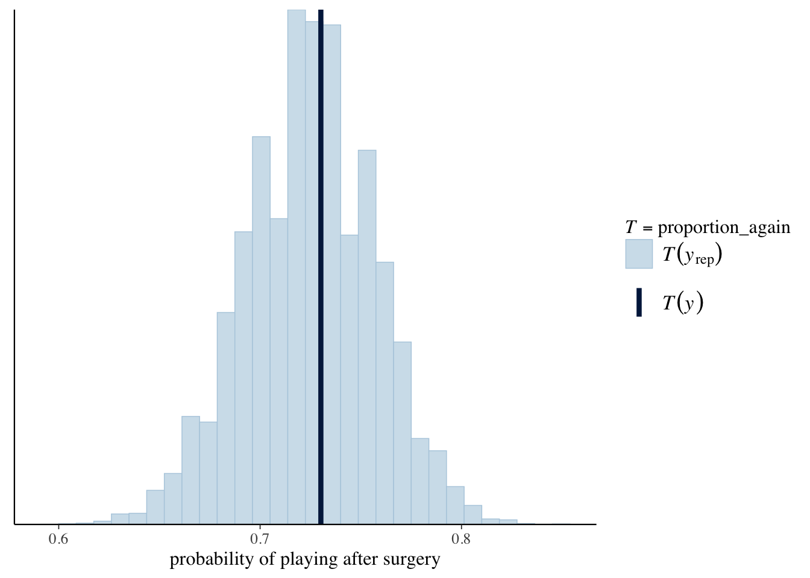
Third and finally, how accurate are our posterior classifications?
In the classification setting where we are predicting whether a pitcher returns to pitch again at the MLB following his surgery, we are interested if our classifications of \(Y\) are right or wrong, specifically how often we are right. Thinking about the perspective of a scout of a team, we would probably prefer a model that is highly accurate at identifying players that will not return to play again at the major league level after surgery, as signing these players could lead to large losses as the team gets to return out of them. In that case, we would want a model that favors specificity over sensitivity, meaning we more accurately predict the result correctly for players that do not play again than for players that do. However, it is important to recognize making this sacrifice will hurt our overall model accuracy a bit.
Taking this all into account, our final model will predict a pitcher will return to the MLB after their surgery only if their posterior predicted probability is greater than 72%. Evaluating our model with this classification cutoff on cross-validated data, we see that our model is overall 64% accurate with a specificity of 68.7% and a sensitivity of 63.56%. Unfortunately, this overall accuracy is lower than the no-information rate of our data. The no-information rate is the accuracy we would get if we simply always predicted the majority outcome. In this case, that would mean predicting that a pitcher always returns to play again in the MLB and would give us an accuracy of 73%. The negative of this is our sensitivity (the proportion of players who do not return to the MLB that we predicted correctly) would be 0. So white our model is not as accurate as we might hope, we will go with it and hopefully make further improvements in the future.
set.seed(84735)
cv_accuracy <- classification_summary_cv(
model = played_after_mod, data = stats_clean, cutoff = 0.72, k = 10)
cv_accuracy$cvModeling seasonal success and trajectory
Now that we have an understanding of what is correlated to a pitcher returning to pitch at the major league level following Tommy John surgery, we can attempt to look how seasonal success changes over a pitcher’s career. This analysis will include both players that never had Tommy John surgery as well as players that had their first surgery after their debut, and will overall only focus on starters due to the systematic differences in longevity between starters and relievers. To measure pitcher “success”, we will use SLG against. An ideal metric would be WAR (Wins Above Replacement) as it captures pitcher performance and is cumulative so accounts for starters that are able to pitch more innings. However, this metric did not come with the seasonal data downloaded from Baseball Reference. From the metrics we have, slugging percentage against is the next best thing. Slugging percentage against represents an average of the total number of bases a pitcher gives up per at bat. Thus, it shows how well a pitcher kept the opposing team of the bases as well as how well the pitcher limited their power.
For this analysis, we have data on 2,674 players and their 12,691 seasons that occurred between 1987 and 2021. Of these 2,674 players, 754 are starters and together they played 4,491 seasons. We will narrow this number a bit more by filtering out potentially active players (anyone that has played in 2020 or 2021) to only analyze complete careers, and will filter out anyone that had Tommy John surgery prior to reaching the MLB. Altogether, this leaves us with 481 players and 3,011 seasons.
While there was no indicator variable provided in the data for if someone is a starter, I created my own by calling a player a starter if they started at least 50% of the games they pitched in over their career. This may not accurately capture players who transitioned roles from starter to reliever or vice versa during their career, but given the quantity of players in this analysis it seemed like a simple and largely accurate way to distinguish players.
seasonal_complete <- seasonal_complete %>%
group_by(Player) %>%
mutate(totalGS = sum(GS),
totalG = sum(G),
starter_reliever = case_when(totalGS/totalG < 0.5 ~ "reliever",
TRUE ~ "starter"))
#number of total players
seasonal_complete %>%
group_by(Player) %>%
count() %>%
nrow()
#number seasons
nrow(seasonal_complete)
#define seasonal complete (starters)
seasonal_complete_starters <- seasonal_complete %>%
filter(starter_reliever == "starter")
#number of starters
seasonal_complete_starters %>%
group_by(Player) %>%
count() %>%
nrow()
# number of seasons starters played
seasonal_complete_starters %>%
filter(starter_reliever == "starter") %>%
nrow()
# remove active players and people that had TJ surgery before debut, count number of seasons
seasonal_complete_starters %>%
group_by(Player) %>%
mutate(lastYear = max(Year)) %>%
filter(lastYear <= 2019,
surgery1time == "after debut" | is.na(surgery1time)) %>%
nrow()
# see number of players we have
seasonal_complete_starters %>%
group_by(Player) %>%
mutate(lastYear = max(Year)) %>%
filter(lastYear <= 2019,
surgery1time == "after debut" | is.na(surgery1time)) %>%
group_by(Player) %>%
count() %>%
nrow()
#define dataset we will work with
starters19 <- seasonal_complete_starters %>%
group_by(Player) %>%
mutate(lastYear = max(Year)) %>%
filter(lastYear <= 2019,
surgery1time == "after debut" | is.na(surgery1time))Exploratory Data Analysis
We will first start by looking at how slugging percent against (will be abbreviated SLG from now on) varies with age for starting pitchers. As seen in the plot below, there appears to be a very weak relationship between pitcher age and SLG, with SLG slightly increasing as pitcher age increases. However, this plot has a few issues. First, it pools all seasons together and ignores the data’s grouped structure: an individual pitcher’s SLG one season will be have some correlation to their SLG the following seasons. Second, there is some kind of selection bias happening with age. The few pitchers that are pitching in their late 30s and early 40s are likely doing so because they’ve had a very successful career!
starters19 %>%
ggplot(aes(x=Age, y=SLG)) +
geom_point()+
geom_smooth(se = FALSE)+
theme_classic()+
labs(x = "pitcher age", y="SLG", title = "Pitcher age versus slugging percerntage")+
theme(plot.title.position = "plot",
plot.title = element_markdown(family = "mono", size =12),
legend.position = "none",
axis.title.x = element_markdown(family="mono", size = 11),
axis.title.y = element_markdown(family="mono", size = 11))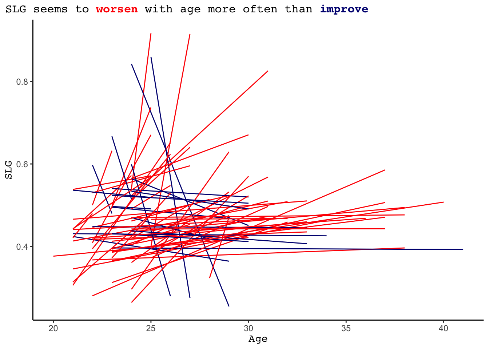
To minimize these issues, we will look at the data in its grouped format. We can start by taking a sample of 80 starters and plotting the smoothed linear trend in their SLG over the course of their career. Looking at the plot, it appears that for the majority of players SLG tends to increase over the course of their career, indicating their performance is worsening with age.
slopes <-starters19 %>%
group_by(Player) %>%
do({
mod = lm(SLG ~ Age, data = .)
data.frame(Intercept = coef(mod)[1],
Slope = coef(mod)[2])
})
starters19 %>%
left_join(slopes, by = "Player") %>%
arrange(Player) %>%
group_by(Player) %>%
mutate(group_id = cur_group_id(),
positive_slope = as.factor(case_when(Slope >0 ~ 1,
TRUE ~ 0))) %>%
filter(group_id <= 80) %>%
ggplot(aes(x=Age, y=SLG, group = Player))+
geom_smooth(aes(color = positive_slope), method = "lm", se = FALSE, size = 0.5)+
theme_classic()+
labs(title = "SLG seems to <strong><span style='color:red'>worsen</span></strong></b> with age more often than <strong><span style='color:navy'>improve</span></strong></b>")+
theme(plot.title.position = "plot",
plot.title = element_markdown(family = "mono", size =12),
legend.position = "none",
axis.title.x = element_markdown(family="mono", size = 11),
axis.title.y = element_markdown(family="mono", size = 11))+
scale_color_manual(values = c("red", "navy"))With some very basic information about SLG trajectory overtime, we will now look into the impact on SLG of undergoing Tommy John surgery at a point in a player’s career. For the 515 players we are analyzing in this study, 85 of them underwent their first Tommy John surgery at some point after their debut. For these players, we will create an categorical variable seasonTime for each season they played. This variable will take one of three values.
- “no surgery”: any season taking place prior to their surgery
- “short after”: any season taking place within 3 years after the year of their surgery
- “long after”: any season taking place at least 3 years after the year of their surgery
For players that did not undergo surgery, all of their seasons will be “no surgery” seasons.
# number of players that underwent Tommy John surgery after their debut
starters19 %>%
filter(surgery1time == "after debut") %>%
group_by(Player) %>%
count() %>%
nrow()
# create the seasonTime variable
starters19 <- starters19 %>%
mutate(seasonTime = case_when(surgery1time == "after debut" & (Year - surgery1Year) <= 3 & (Year - surgery1Year) > 0 ~ "short after",
surgery1time == "after debut" & (Year - surgery1Year) > 3 ~ "long after",
TRUE ~ "no surgery")) For the 85 starters that underwent surgery, the average number of seasons prior the surgery was 5.15. This distribution of number of seasons before surgery can be seen in the density plot below. Of these 85 starters, 25 did not return to play again the MLB level following their surgery, and only 35 played “long after” their surgery. 33 players pitched in all three time periods.
breakdown <- starters19 %>%
filter(surgery1time == "after debut") %>%
group_by(Player, seasonTime) %>%
count() %>%
pivot_wider(id_cols = Player, names_from = seasonTime, values_from = n) %>%
mutate(`short after` = coalesce(`short after`, 0),
`long after` = coalesce(`long after`, 0)) %>%
ungroup()
# number not playing after surgery
breakdown %>%
mutate(after = `short after` + `long after`) %>%
group_by(`after`) %>%
count() %>%
head(1)
# number not playing long after surgery
breakdown %>%
group_by(`long after`) %>%
count() %>%
head(1)# density plot of seasons prior to surgery
breakdown %>%
ggplot(aes(x=`no surgery`))+
geom_density(fill = "lightcyan3")+
labs(x= "seasons prior to surgery", title = "Number of seasons prior to surgery for 85 MLB starters")+
theme_classic()+
theme(plot.title.position = "plot",
plot.title = element_markdown(family = "mono", size = 12),
axis.title.x = element_markdown(family="mono", size = 11),
axis.title.y = element_markdown(family="mono", size = 11))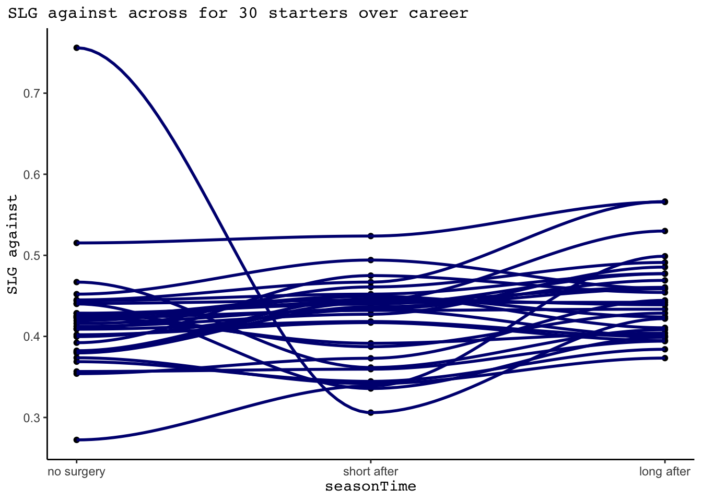
For the 33 starters that played in all three time periods, we plot the trend in SLG across the three periods below, grouped by player. 30 players are included that pitched at least 10 innings in each of the three time periods. For most players, SLG appears to increase slightly as they move into the period of “long after” their surgery, indicating poorer performance. We see two major outliers in SLG prior to having surgery. Matt Riley is on the high end with a SLG of 0.756, though this number is coming from only pitching 11 innings prior to his surgery. On the other hand, Jose Fernandez is on the low end with a phenomenal SLG against of 0.272 over 223.4 innings pitched in two seasons.
breakdown %>%
filter(`long after` > 0 & `short after` >0) %>%
left_join(seasonal_complete_starters, by = "Player") %>%
select(-c(`long after`, `no surgery`, `short after`)) %>%
mutate(seasonTime = case_when(surgery1time == "after debut" & (Year - surgery1Year) <= 3 & (Year - surgery1Year) > 0 ~ 2,
surgery1time == "after debut" & (Year - surgery1Year) > 3 ~ 3,
TRUE ~ 1)) %>%
group_by(Player, seasonTime) %>%
summarize(avgSLG = weighted.mean(SLG, w=IP), totalIP = sum(IP)) %>%
filter(Player %!in% c("Erik Bedard", "Joe Wieland", "Shawn Hill")) %>% # did not pitch at least 10 innings per period
ggplot(aes(x=seasonTime, y=avgSLG, group = Player))+
geom_point()+
geom_smooth(color = "navy")+
labs(title = "SLG against across for 30 starters over career", y = "SLG against")+
scale_x_continuous(breaks = 1:3, labels = c("no surgery", "short after", "long after"))+
theme_classic()+
theme(plot.title.position = "plot",
plot.title = element_markdown(family = "mono", size = 12),
axis.title.x = element_markdown(family="mono", size = 11),
axis.title.y = element_markdown(family="mono", size = 11))Model Intro and Priors
The goal with this model will be to predict a player’s seasonal SLG as a function of their age and the seasonTime variable. Again, this variable will remain “no surgery” for all seasons for players that never had Tommy John surgery. This model will use data described earlier that contains information on 481 starters, but filters out seasons with less than 15 IP due to the abnormal SLGs that only few innings pitched often give. Originally, I had thought of including IP as a predictor to account for these abnormal SLGs, but the goal of this analysis is to help scouts predict a pitcher’s success prior to when the season starts - thus, only including variables that are known prior to the season starting is necessary.
The following predictors will be used in this model:
- \(X_1\): Pitcher age at season
- \(X_2\): Pitcher age squared at season
- \(X_3\): Indicator for if the season is happening “short after” surgery (reference level “no surgery”)
- \(X_4\): Indicator for if the season in happening “long after” surgery (reference level “no surgery”)
The model built will take the form of a hierarchical model with varying intercepts, allowing the intercept (baseline SLG) to vary from pitcher to pitcher. I really contemplated a model with varying slopes in addition to intercepts, which would allow the rate at which SLG varies with age to change from pitcher to pitcher, but ultimately the runtime and complexity of this model swayed me to stick with just varying intercepts.
Layer 1
The first layer of the hierarchical model describes the relationship between SLG and age/surgery status within each pitcher \(j\) by: \[\begin{equation} Y_{ij} | \beta_{0j}, \beta_1, \beta_2, \beta_3, \beta_4, \sigma_y \sim N(\mu_{ij}, \sigma_y^2) \;\; \text{ where } \; \mu_{ij} = \beta_{0j} + \beta_1 X_{ij1} + \beta_2 X_{ij2} + \beta_3 X_{ij3} + \beta_4 X_{ij4} . \end{equation}\]
This equation assumes that for each pitcher \(j\), SLGs are normally distributed around an age- and surgery status-specific mean, \(\beta_{0j} + \beta_1 X_{ij1} + \beta_2 X_{ij2} + \beta_3 X_{ij3} + \beta_4 X_{ij4}\), with standard deviation \(\sigma_y\). We assume the relationships between SLG and age and surgery status randomly vary from pitcher to pitcher, as players have different intercepts \(\beta_{0j}\) but shared coefficients \((\beta_1, \beta_2, \beta_3, \beta_4)\). This layer of the model depends on 6 parameters, only one of which (\(\beta_{0j}\)) is pitcher-specific.
- \(\beta_{0j}\): intercept of the regression model for pitcher \(j\)
- \(\beta_1\): the typical change in a pitcher’s SLG per one year increase in age, holding surgery status constant
- \(\beta_2\): the typical change in a pitcher’s SLG per one unit increase in age squared, holding surgery status constant
- \(\beta_3\): the typical difference in a pitcher’s SLG for season short after Tommy John surgery in comparison to not having Tommy John surgery, holding age constant
- \(\beta_4\): the typical difference in a pitcher’s SLG for season long after Tommy John surgery in comparison to not having Tommy John surgery, holding age constant
- \(\sigma_y\): within-group variability around the mean regression model \(\beta_{0j} + \beta_1 X_{ij} + \beta_2 X_{ij} + \beta_3 X_{ij} + \beta_4 X_{ij}\). This is a measure of the strength of the relationship between an individual pitcher’s SLG and their age and surgery status.
Layer 2
The second layer of the hierarchical model represents how the relationships between SLG and age/surgery status vary from pitcher to pitcher, or between pitchers. Thus, we will model the variability in the pitcher-specific intercept \(\beta_{0j}\).
We assume that the pitcher-specific intercept parameters (baseline SLGs) vary normally around mean \(\beta_0\) with standard deviation \(\sigma_0\).
\[\begin{equation} \beta_{0j} | \beta_0, \sigma_0 \stackrel{ind}{\sim} N(\beta_0, \sigma_0^2) . \end{equation}\]
In this equation, parameter \(\beta_0\) represents the global average SLG intercept across all pitchers (the average pitcher’s baseline SLG). The parameter \(\sigma_0\) represents between-group variability in intercepts \(\beta_{0j}\) (the extent to which baseline SLGs vary from pitcher to pitcher).
Completing the model
Finally, we specify the priors for global parameters \(\beta_0\), \(\beta_1\), \(\sigma_y\), and \(\sigma_0\). We put a prior of \(N(0.439, 0.069)\) on the centered intercept as we are pretty certain typical pitcher has a SLG against of about 0.439. We are unsure of the true relationship between age and SLG as well as surgery status and SLG, so put weakly informative priors on these parameters. The final model is shown below:
#get numbers for prior on intercept
starters19 %>%
ungroup() %>%
filter(IP > 15) %>%
summarize(mean(SLG), sd(SLG))\[\begin{equation} \begin{split} Y_{ij} | \beta_{0j}, \beta_1, \beta_2, \beta_3, \beta_4, \sigma_y \sim N(\mu_{ij}, \sigma_y^2) \;\; \text{ where } \; \mu_{ij} = \beta_{0j} + \beta_1 X_{ij1} + \beta_2 X_{ij2} + \beta_3 X_{ij3} + \beta_4 X_{ij4} \\ \beta_{0j} | \beta_0, \sigma_0 \stackrel{ind}{\sim} N(\beta_0, \sigma_0^2) \\ \beta_{0c} & \sim N(0.44, 0.069) \\ \beta_1 & \sim N(0, 0.0439^2) \\ \beta_2 & \sim N(0, 0.00077^2) \\ \beta_3 & \sim N(0, 0.8954^2) \\ \beta_4 & \sim N(0, 0.87907^2) \\ \sigma_y & \sim \text{Exp}(1) \\ \sigma_0 & \sim \text{Exp}(1). \\ \end{split} \end{equation}\]
#get data ready - this model does not use all players as
slgData <- starters19 %>%
ungroup() %>%
filter(IP > 15) %>%
mutate(age2 = Age^2,
seasonTime = case_when(surgery1time == "after debut" & (Year - surgery1Year) <= 3 & (Year - surgery1Year) > 0 ~ 1,
surgery1time == "after debut" & (Year - surgery1Year) > 3 ~ 2,
TRUE ~ 0),
seasonTime = as.factor(seasonTime),
seasonTime = relevel(seasonTime, ref='0')) slgMod<- stan_glmer(
SLG ~ Age + age2 + seasonTime + (1 | Player),
data = slgData, family = gaussian,
prior_intercept = normal(0.44, 0.069),
prior = normal(0, 2.5, autoscale = TRUE),
prior_aux = exponential(1, autoscale = TRUE),
prior_covariance = decov(reg = 1, conc = 1, shape = 1, scale = 1),
chains = 4, iter = 5000*2, seed = 84735, adapt_delta = 0.99999
)
#write_rds(slgMod, "data/slgMod.rds")slgMod <- read_rds("data/slgMod.rds")
# Check the prior specifications
prior_summary(slgMod)$prior_intercept
prior_summary(slgMod)$priorChecking the diagnostics
Just like with the logistic regression model, we must check the diagnostics of the simulation. Plotting the trace plots for the global parameters below on the left, we see no discernible trends or patterns, which is what we want, implying that our Markov chains are stable. Additionally, the autocorrelation plots shown below on the right shows that our Markov chain sufficiently mimics the behavior of an independent sample. We also learn from a test of R-hat that there is evidence of parallel chains, as variability between chains is roughly equal to that within chains for all parameters.
columns <- as.data.frame(slgMod)[,c(1:5, 445:446)]
mcmc_trace(columns)
mcmc_acf(columns)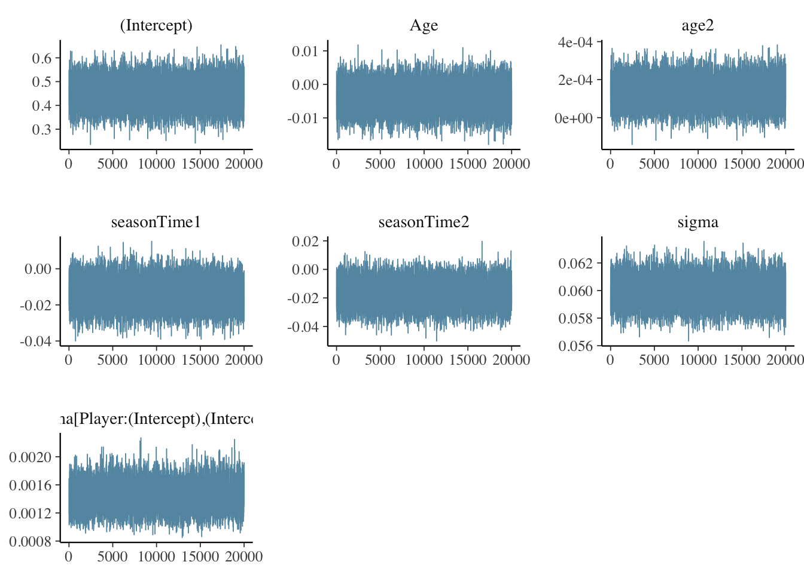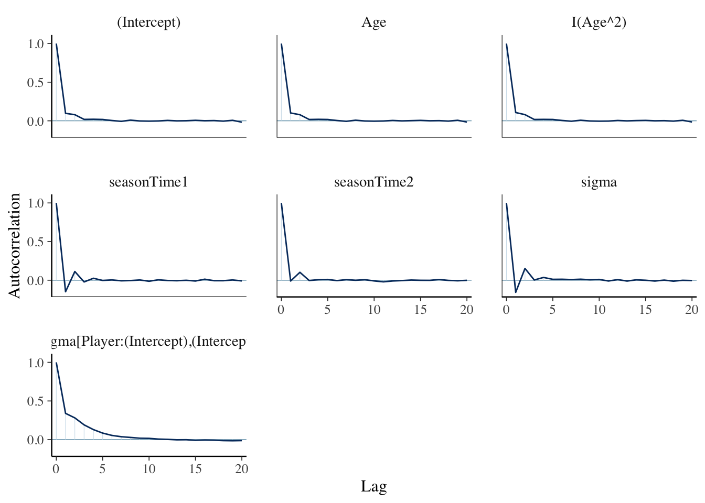
rhat(slgMod) %>%
head(5)Posterior results
The global relationship
The global relationship between age, surgery status, and SLG for the typical pitcher is represented by \(\beta_{0} + \beta_1 X + \beta_2 X + \beta_3 X + \beta_4\). We can check out the posterior summaries for \(\beta_0 \dots \beta_4\) below, which are fixed across pitchers.
tidyMod <- tidy(slgMod, effects = "fixed",
conf.int = TRUE, conf.level = 0.80)
tidyMod %>%
mutate(estimate = round(estimate, 6),
std.error = round(std.error, 4),
conf.low = round(conf.low, 6),
conf.high = round(conf.high, 6)) %>%
gt() %>%
tab_header(
title = md("**Model results**")
) | Model results | ||||
|---|---|---|---|---|
| term | estimate | std.error | conf.low | conf.high |
| (Intercept) | 0.453004 | 0.0543 | 0.383468 | 0.521428 |
| Age | -0.003880 | 0.0039 | -0.008746 | 0.001057 |
| age2 | 0.000138 | 0.0001 | 0.000051 | 0.000223 |
| seasonTime1 | -0.013582 | 0.0071 | -0.022768 | -0.004494 |
| seasonTime2 | -0.016627 | 0.0081 | -0.026996 | -0.006200 |
With this summary, we see that the 80% credible interval on the Age coefficient includes 0. However, the age squared (age2) coefficient is significant. Given that these coefficients work together, there is evidence that the typical pitcher tends get worse with age (holding surgery status constant). This relationship can be seen below in the plot below of 200 posterior plausible global model lines.
B0 <- tidyMod$estimate[1]
B1 <- tidyMod$estimate[2]
B2 <- tidyMod$estimate[3]
slopeB = B1 + B2
slgData %>%
add_fitted_draws(slgMod, n = 200, re_formula = NA) %>%
ggplot(aes(x = Age, y = SLG)) +
geom_line(aes(y = .value, group = .draw), alpha = 0.1) +
geom_abline(intercept = B0, slope = slopeB, color = "blue")+
labs(title = "Possible posterior relationship between Age and SLG")+
theme_classic()+
theme(plot.title.position = "plot",
plot.title = element_markdown(family = "mono", size = 12),
axis.title.x = element_markdown(family="mono", size = 11),
axis.title.y = element_markdown(family="mono", size = 11),
legend.title = element_markdown(family="mono", size = 11),
legend.text = element_markdown(family="mono", size = 11))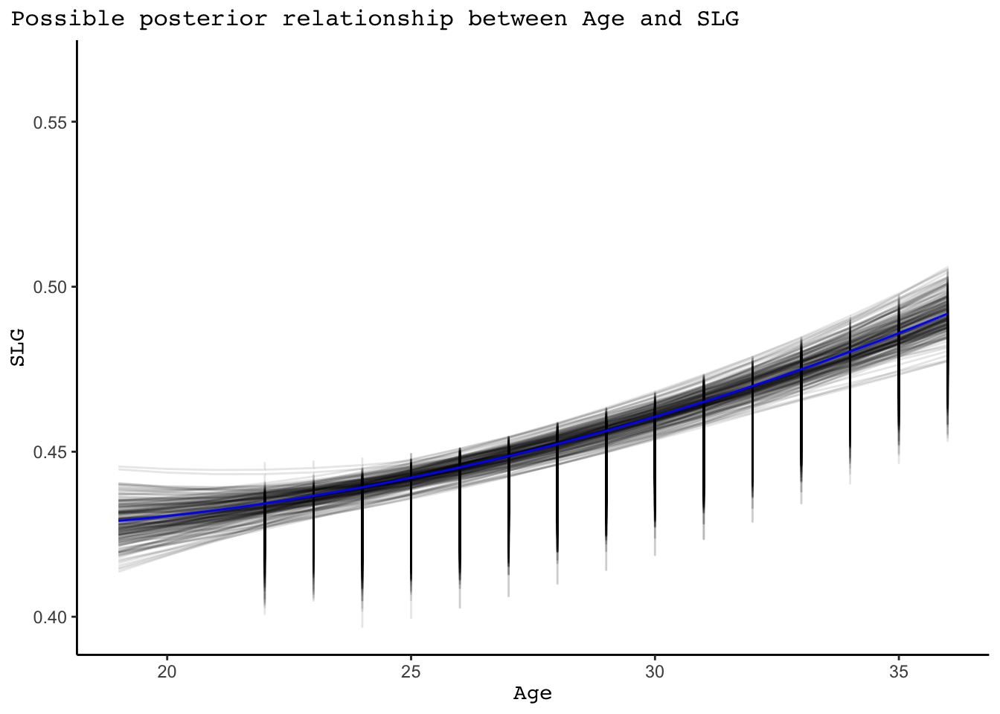
Both seasonTime coefficients are significant. This signifies that there is an 80% chance that the typical pitcher tends perform somewhere between 0.023 and 0.004 SLG better short after their surgery in comparison to no surgery, and somewhere 0.027 and 0.006 SLG better long after their surgery in comparison to no surgery (holding age constant). As seen below in the plot below, the typical pitcher does not have a difference in SLG comparing “short after” his surgery to “long after” it.
mcmc_areas(slgMod, pars = vars(starts_with("season")), prob = 0.8) +
geom_vline(xintercept = 0)+
scale_y_discrete(labels = c("short after surgery", "long after surgery"))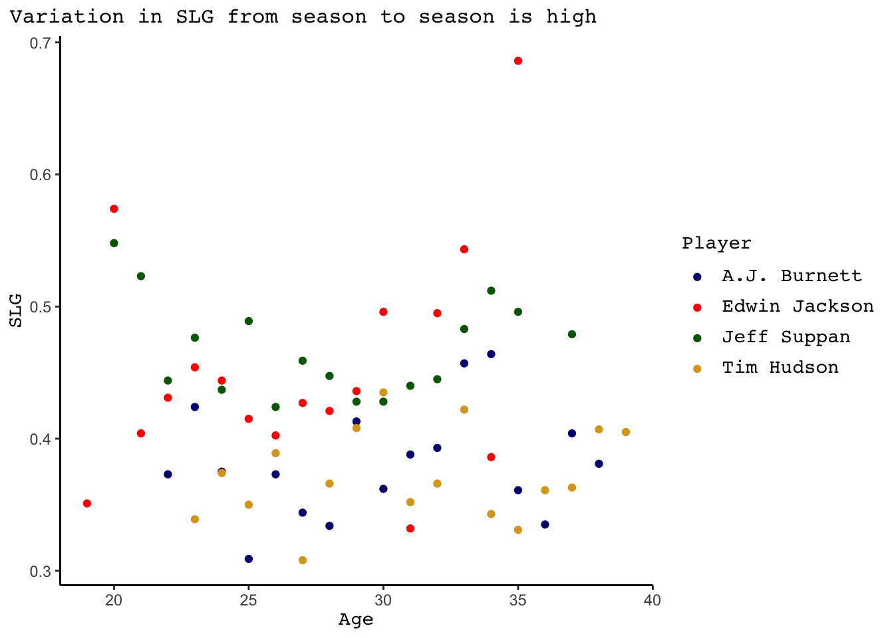
Despite the seasonTime variables being statistically significant, they are not practically significant. There is so much randomness in baseball - it is a major reason why teams play 162 games in a season and why even the worse teams typically win 60+ games. As a result, pitcher SLG is going to vary quite a bit from season to season. This can be seen in the graph below, which plots pitcher SLG across time for four players each with 17 seasons with 15+ IP. Even in a pitcher’s seasons pretty close in age, there is quite a bit of noise in SLG, providing evidence that the “significant decrease” of about 0.014 short after surgery and 0.017 long after surgery is really not that meaningful.
slgData %>%
group_by(Player) %>%
mutate(nseasons = n()) %>%
filter(nseasons == 17) %>%
ggplot(aes(x=Age, y=SLG, color = Player))+
geom_point()+
scale_color_manual(values = c("navy", "red", "darkgreen", "goldenrod"))+
labs(title = "Variation in SLG from season to season is high")+
theme_classic()+
theme(plot.title.position = "plot",
plot.title = element_markdown(family = "mono", size = 12),
axis.title.x = element_markdown(family="mono", size = 11),
axis.title.y = element_markdown(family="mono", size = 11),
legend.title = element_markdown(family="mono", size = 11),
legend.text = element_markdown(family="mono", size = 11))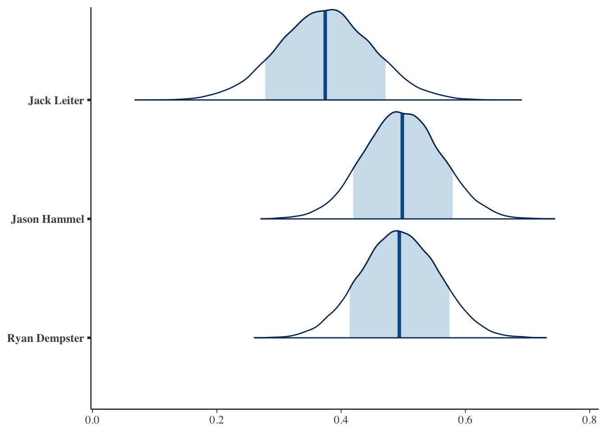
Group specific relationships
With this model, we can compare posterior results between pitchers. For example, we will look at the posterior results of 2019 Hall of Fame inductee Ryan Dempster and former starter Jason Hammel. The summary below compares the typical SLGs of these pitchers to the average pitcher, \(b_{0j} = \beta_{0j} - \beta_0\). When controlling for age and surgery status, Dempster’s seasonal SLG tends to be significantly lower (better) than the average pitchers’s, whereas Hammel’s tends to lean slightly better than average but not significantly. For example, there’s an 80% posterior chance that Dempster’s typical seasonal SLG is between 0.057 and 0.02 points better than average. This is not surprising given that Dempster was admitted to the Hall of Fame!
tidy(slgMod, effects = "ran_vals",
conf.int = TRUE, conf.level = 0.80) %>%
filter(level %in% c("Ryan_Dempster", "Jason_Hammel")) %>%
select(level, estimate, conf.low, conf.high) %>%
rename(Player = level) %>%
gt() %>%
tab_header(
title = md("**Posterior results for Dempster and Hammel**")
)| Posterior results for Dempster and Hammel | |||
|---|---|---|---|
| Player | estimate | conf.low | conf.high |
| Jason_Hammel | -0.01177937 | -0.03181847 | 0.007848302 |
| Ryan_Dempster | -0.03825081 | -0.05659470 | -0.019846683 |
If Dempster and Hammel were to come back and play in the 2022 season, we could predict their next season’s SLG using their age and surgery status. More importantly, we can predict SLG for pitchers that are currently active and that we do not have prior MLB seasonal statistics on. For example, we can try to predict the 2022 seasonal SLG for MLB 2021 first round draft pick Jack Leiter. Given that we don’t have any information on prior seasonal SLGs, his posterior predicted interval is much wider. In a future model, a variable that we could add would be draft round, which might help explain more of the baseline variation in SLG.
# Simulate posterior predictive models for the 3 pitchers
set.seed(84735)
predict_next_season <- posterior_predict(
slgMod,
newdata = data.frame(
Player = c("Ryan Dempster", "Jason Hammel", "Jack Leiter"),
Age = c(44, 39, 21), age2 = c(1936,1521,21), seasonTime = c("2", "0", "0")))
# Posterior predictive model plots
mcmc_areas(predict_next_season, prob = 0.8) +
ggplot2::scale_y_discrete(
labels = c("Ryan Dempster", "Jason Hammel", "Jack Leiter"))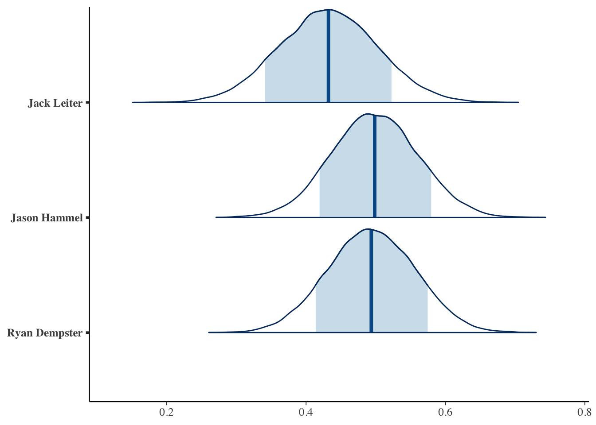
Within- and between- group variability
Knowing that there is variability in SLG, we want to understand where it is coming from. Is it coming from season to season within each pitcher \((\sigma_y)\), or is it coming from differences between pitchers \((\sigma_0)\)?
Posterior summaries for these variance parameters suggest that more of the variance is coming from between pitchers than within pitchers. For a given pitcher \(j\), we estimate that their observed SLG at any age and surgery status will deviate from their mean regression model by roughly 0.06 in SLG \((\sigma_y)\). As seen in the variation of SLG scatterplot from earlier, a deviation of 0.06 is neither large nor small, suggesting a mediocre relationship between SLG, age, and surgery status within pitchers. In contrast, we expect that baseline SLGs vary by roughly 0.038 points from pitcher to pitcher \((\sigma_0)\).
tidy_sigma <- tidy(slgMod, effects = "ran_pars")
tidy_sigmaProportionally, we understand that differences between pitchers account for roughly 28.3% of the total variability in SLG, with fluctuations among seasons within pitchers explaining the majority of variation (71.66%).
sigma_0 <- tidy_sigma[1,3]
sigma_y <- tidy_sigma[2,3]
sigma_0^2 / (sigma_0^2 + sigma_y^2)
sigma_y^2 / (sigma_0^2 + sigma_y^2)Model evaluation
Just as with our logistic regression model, to evaluate this model we will ask three questions.
First, how fair is the model?
The answer to this question is pretty much the same as with the other model - this model uses what some may consider private information, but these players understand that this information being made public is part of what comes with being an MLB player. Thus, while we cannot ask all players whether they are okay with their information being used in this model, we will assume it okay.
Second, how wrong is the model? The posterior predictive check below shows that our model produces posterior simulated datasets of seasonal SLG that are fairly consistent with the main features in the original data the model was run with. This is good news, and allows us to move forward to question 3.
pp_check(slgMod)+
xlab("SLG")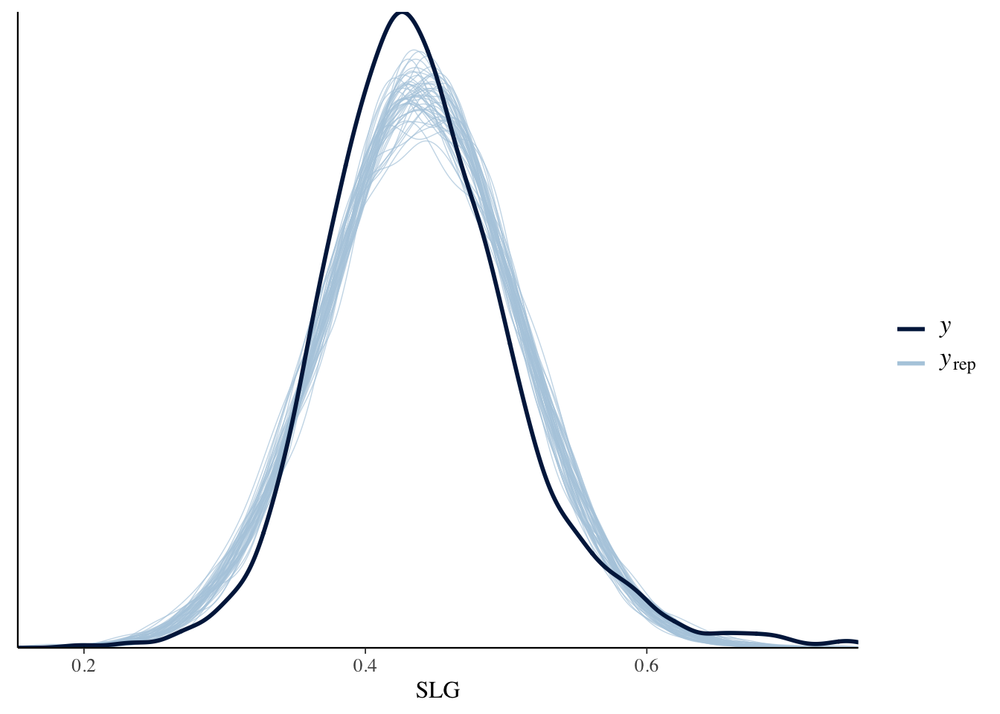
Finally, what’s the predictive accuracy of this model?
We answer this question by seeing how well our model did predicting the seasonal SLGs for the pitchers that were part of our data. The observed seasonal SLGs tend to be 0.033 points, or 0.539 standard deviations, from their posterior mean predictions. Knowing the randomness and high variability of SLG, this amount of error does not seem unreasonable. The model also has a good proportion of observed SLGs (60.3%) that fall within their respective 50% posterior predictive interval.
set.seed(84735)
prediction_summary(model = slgMod, data = slgData)Unfortunately, I was unable to obtain cross-validated metrics of posterior predictive accuracy due to the model’s complexity and large amount of data. These metrics would help us understand how well our model predicts the seasonal SLGs of players that weren’t included in our sample data. Despite this unfortunate circumstance, the not cross-validated model results proved to be encouraging.
Future Steps and Conclusions
Throughout this analysis, we have covered a lot. Going back to the results of the original logistic regression model, we understand that the more innings a player pitches and the higher a strikeout rate they have, the more likely they are to pitch again at the MLB level following their surgery (holding all variables constant). We also learned players are less and less likely to play again at the MLB level as they have surgery at older ages (holding all other variables constant), which is not necessarily unexpected. In the future, we could brainstorm additional variables that may increase the predictive power of this model. It could also be interesting to run this model with all pitchers (instead of just those that have had Tommy John surgery) and investigate the relationship between returning to pitch the following season and pitcher age, taking into account past performance metrics and surgery status.
Thinking about the second model, we found a statistically significant relationship between age and pitcher performance. The relationship between surgery status and SLG appeared practically insignificant. The nice thing about this model is that it allows us to predict seasonal SLGs with reasonable error. However, in the future a few modifications could be made to improve this model:
- Include draft round as a predictor variable
- Run the model with varying slopes, allowing the relationship between pitcher age and SLG as well as pitcher surgery status and SLG to vary from pitcher to pitcher
- Use all players (including those that had Tommy John surgery before reaching the majors) and data from currently active players so that we can predict performance for active players in their upcoming 2022 or 2023 season
There is still so much to be learned about the complex relationship between Tommy John surgery, aging, and pitcher performance. While there are flaws in this analysis (like most analyses), it is a step in the right direction to understanding this complicated relationship. And in the Bayesian spirit, I plan continue to update my knowledge about the Tommy John surgery, aging, and pitcher performance using additional data, modeling techniques, and baseball IQ in the future.